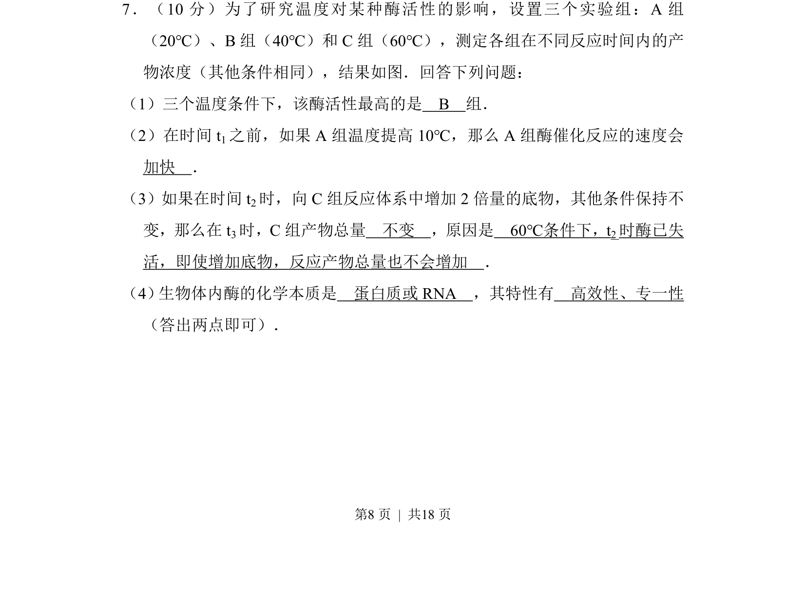
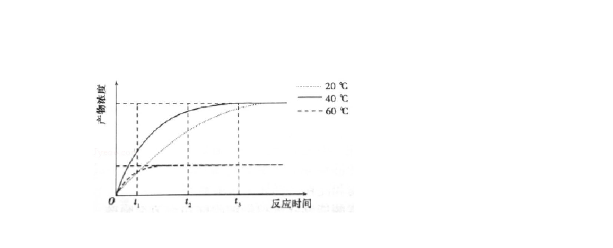
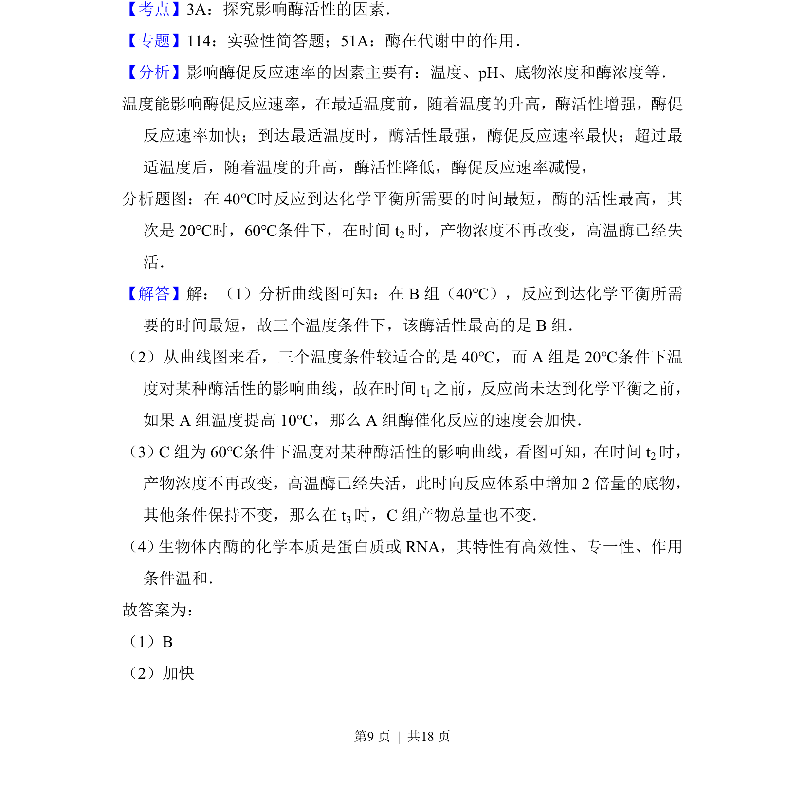
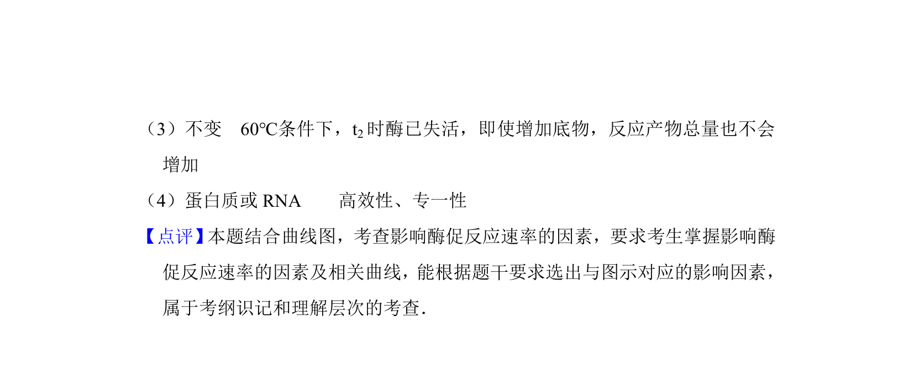

考点：酶活性 温度对酶活性的影响 酶的特性 底物浓度


本题通过酶促反应实验，考查温度对酶活性的影响及底物浓度与酶活性的关系。


📄 原 PDF 第 8 页：
素材/真题/吉林/2008-2024·（吉林）生物高考真题/2016年高考生物试卷（新课标Ⅱ）（解析卷）.pdf
7．（10分）为了研究温度对某种酶活性的影响，设置三个实验组：A组 （20℃）、B组（40℃）和C组（60℃），测定各组在不同反应时间内的产 物浓度（其他条件相同），结果如图．回答下列问题： （1）三个温度条件下，该酶活性最高的是 B 组． （2）在时间t 1之前，如果A组温度提高10℃，那么A组酶催化反应的速度会 加快 ． （3）如果在时间t 2时，向C组反应体系中增加2倍量的底物，其他条件保持不 变，那么在t 3时，C组产物总量 不变 ，原因是 60℃条件下，t2时酶已失 活，即使增加底物，反应产物总量也不会增加 ． （4） 生物体内酶的化学本质是 蛋白质或RNA ，其特性有 高效性、专一性 （答出两点即可）．